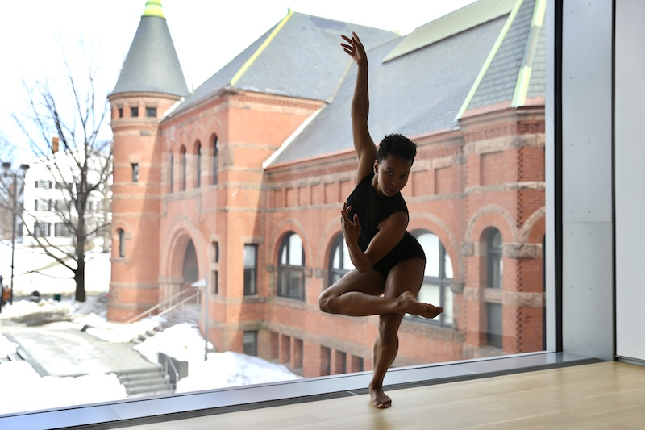
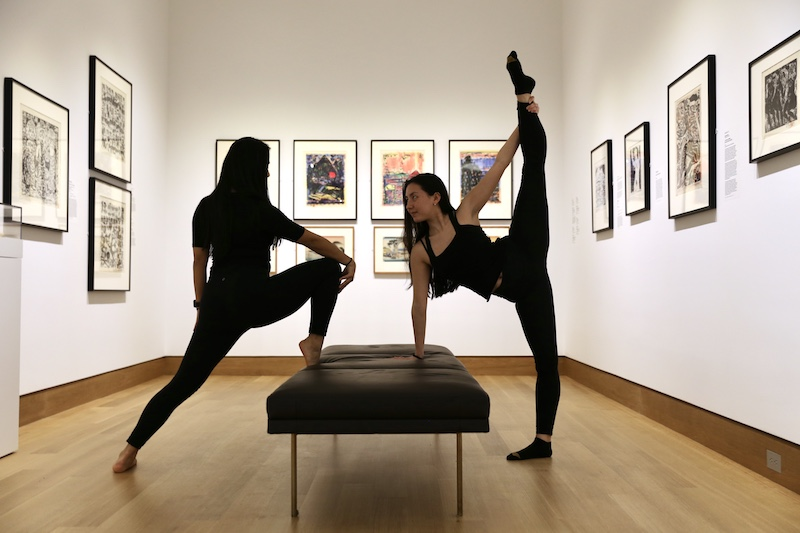
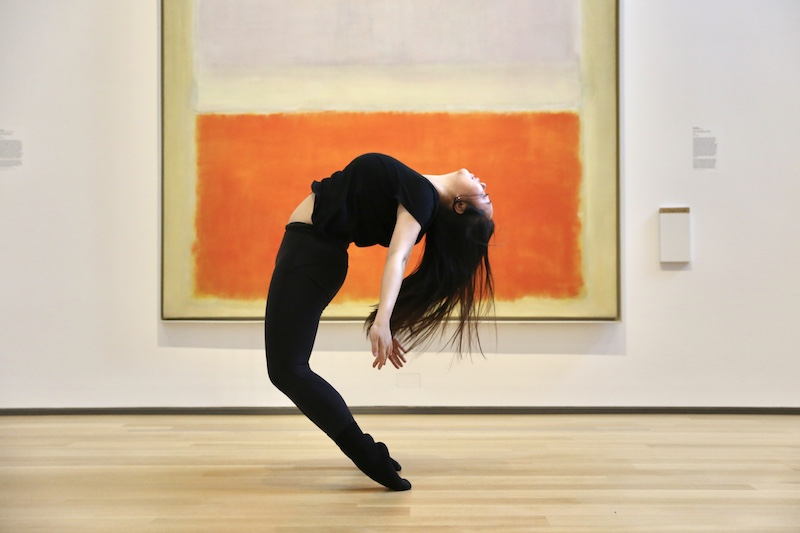
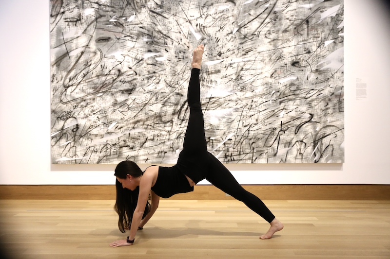
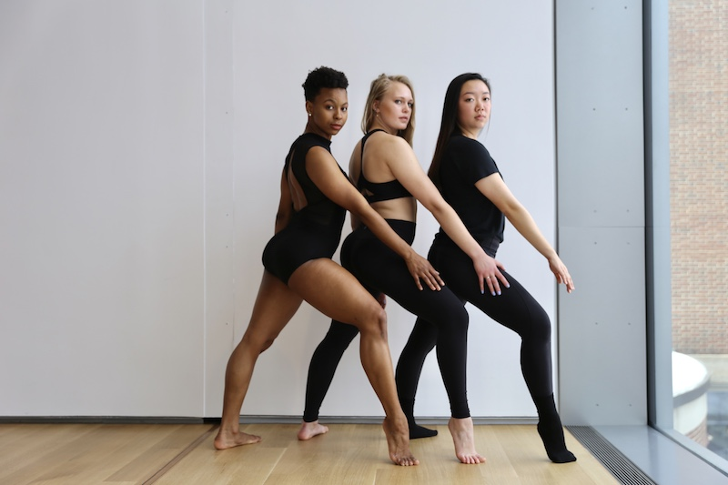
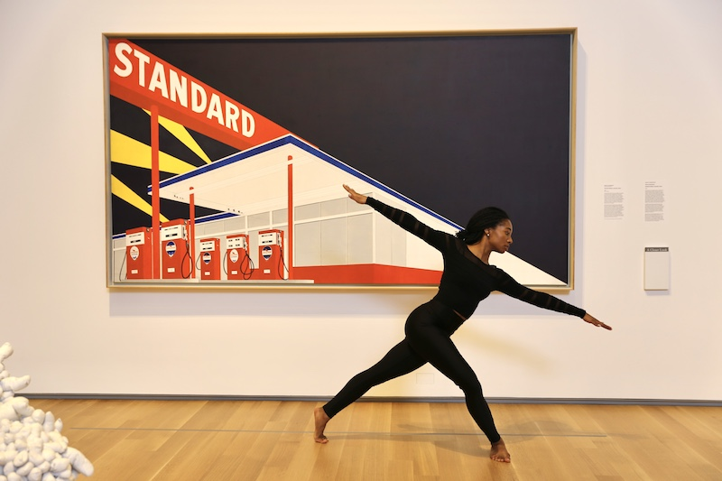
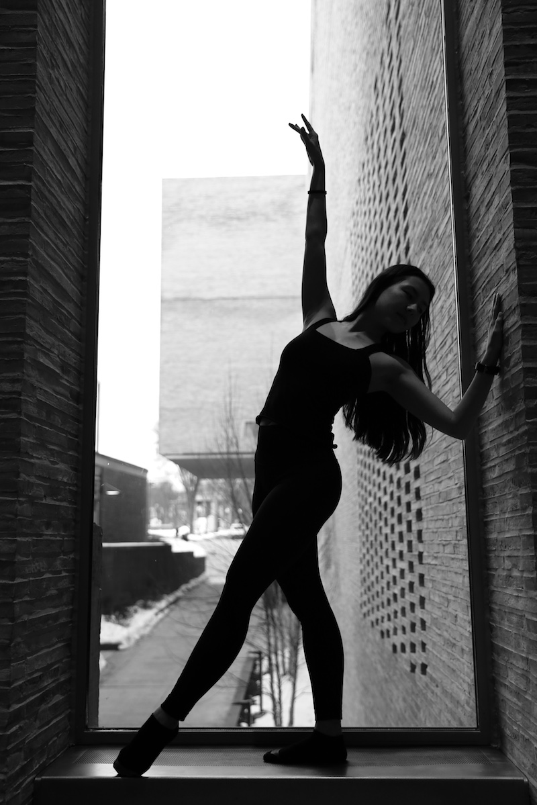
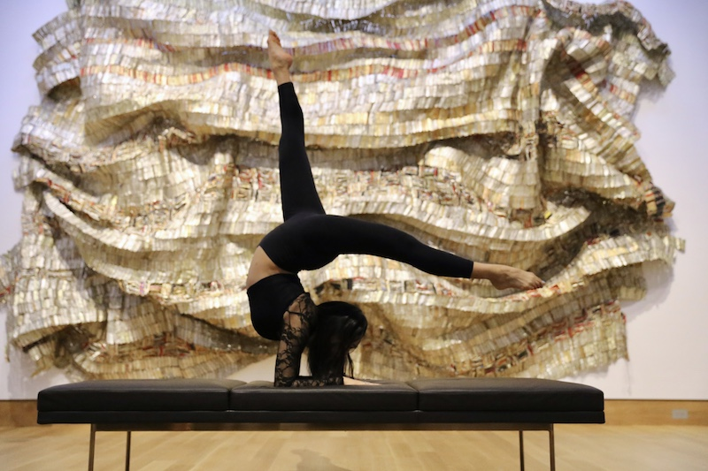

I volunteered to run my dance group's spring photoshoot and was able to convince the student coordinator of the Hood Museum of Art in Hanover, New Hampshire to let us use their space. I had the best time capturing movement in the museum's bright lighting, and the massive artworks gave use fun lines to use as backdrops. The photo of the backbend in front of the orange Rothko is my favorite shot of the day.